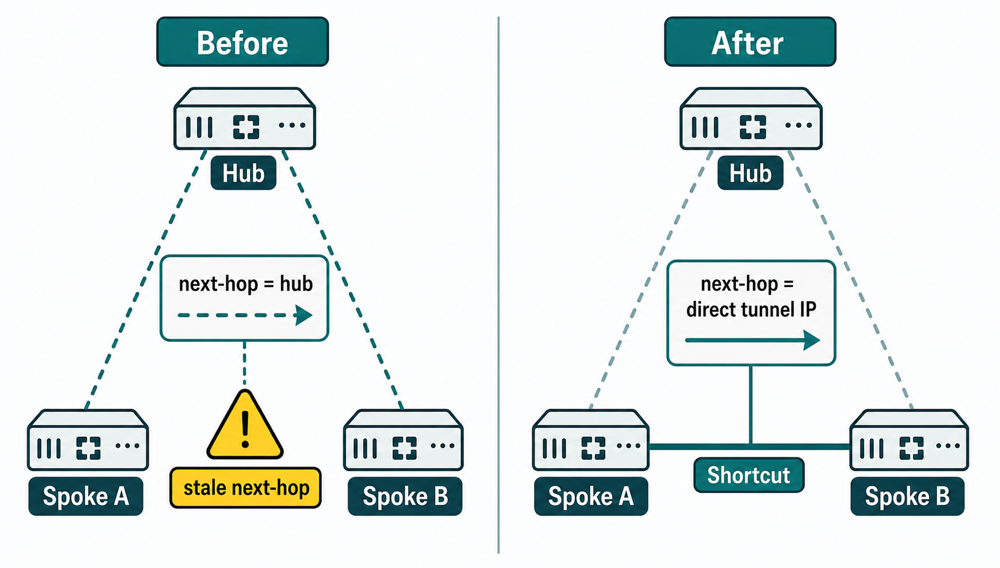

Overview
The interaction between ADVPN shortcut formation and BGP route propagation is one of the most nuanced topics in the NSE7 curriculum — and the source of a disproportionate share of real-world ADVPN deployment failures. The core problem is a timing and consistency challenge: BGP routes on a spoke are learned from the hub and carry next-hop attributes pointing to the hub's overlay IP. When a shortcut forms between two spokes, the data plane path changes immediately — traffic can now reach the destination spoke directly. But the BGP routing table does not automatically update its next-hop to reflect the new path. Without intervention, the routing table and the forwarding table are inconsistent: the forwarding plane knows about the shortcut, but the routing plane still points to the hub.
FortiGate's ADVPN implementation addresses this via a mechanism called auto-discovery route updates. When a spoke's ADVPN process establishes a shortcut tunnel, it signals the BGP/routing process to update the next-hop for the destination prefix to use the shortcut's tunnel endpoint rather than the hub. This update propagates into the routing table, ensuring that subsequent traffic follows the shortcut path. The reliability of this mechanism depends on the BGP configuration: if route policies on the spoke filter or modify the BGP route in ways that interfere with the next-hop update, the automatic correction will fail. Understanding exactly which configuration elements enable correct next-hop convergence — and which misconfiguration patterns prevent it — is the focus of this session.
A related design consideration is prefix granularity: whether to advertise spoke LANs as their native subnet (e.g., 10.20.30.0/24) or to advertise a loopback or tunnel endpoint as a /32. In ADVPN+BGP, advertising the actual LAN prefix is the standard approach. Advertising /32 loopbacks has use cases in certain redundancy designs but complicates the next-hop update process because the shortcut forwarding next-hop and the BGP next-hop are different address types. The exam tests understanding of what happens to BGP routes when shortcuts go down as well as when they form: when a shortcut is torn down due to idle timeout, the routing layer must fall back to hub-based next-hops gracefully, and BGP must re-advertise the affected routes with hub next-hops before the shortcut disappears entirely to avoid a black-hole gap during the transition.

Target Questions
These are the questions your Socratic session will explore. Read them before you start — they tell you what understanding to look for while reviewing the study guide.
- 1When a spoke-to-spoke shortcut forms in ADVPN, how do the routes in the spoke's routing table need to update?
- 2What is the BGP next-hop problem in ADVPN and why does it cause a black hole?
- 3How is the next-hop-self configuration on the hub used to prevent next-hop issues?
- 4What is the "auto-discovery" mechanism — how does a spoke learn that a shortcut exists to another spoke?
- 5What CLI command shows the BGP routes learned over an ADVPN tunnel on a spoke?
- 6If an ADVPN shortcut goes down, what BGP and routing changes happen on the affected spoke?
- 7What is the difference between advertising a /24 spoke prefix vs a /32 loopback in ADVPN+BGP?